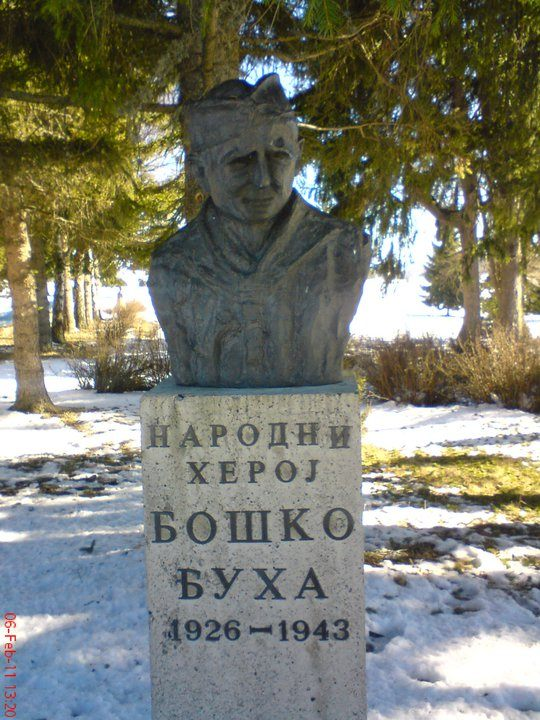

NAŠ KRAJ · IME NAŠE MZ
Ko je bio Boško Buha i zašto se naša mesna zajednica zove po njemu
Kada kažemo "MZ Boško Buha", većina nas pomisli na zgradu mesne zajednice, zbor građana ili ulicu Boška Buhe u kojoj neki od nas žive. Iza tog imena stoji priča o dečaku koji je u rat otišao sa petnaest godina, a iz njega se nije vratio.
Boško Buha rođen je 1926. godine u selu Gradina kod Virovitice, u Slavoniji. Bio je dete iz srpske porodice. Posle stvaranja Nezavisne Države Hrvatske 1941. godine porodica je postala meta ustaša i morala je da potraži utočište u Srbiji. Tako je petnaestogodišnji Boško stigao u Mačvu.
Iste godine pridružio se Mačvanskom partizanskom odredu, a neko vreme bio je i u oslobođenom Užicu. Posle povlačenja partizana iz Srbije borio se u 4. bataljonu Druge proleterske brigade. Pamtili su ga kao jednog od najveštijih bombaša u brigadi. Iako je bio među najmlađima, drugovi su ga izabrali za svog delegata na Prvom kongresu Ujedinjenog saveza antifašističke omladine Jugoslavije.

Poginuo je 27. septembra 1943. godine kod sela Jabuka, između Pljevalja i Prijepolja. Kamionom se sa lekarkom Sašom Božović i komandantom brigadne bolnice Bogdanom Radanom vozio u Prijepolje po sanitetski materijal, kada su upali u četničku zasedu. Boško i Radan su pružili otpor, ali su bili savladani. Imao je samo sedamnaest godina.
Za narodnog heroja Jugoslavije proglašen je posthumno, 20. decembra 1951. godine. Na mestu pogibije 1964. godine podignut je spomen-dom, a pored kamena koji obeležava mesto zasađeno je sedamnaest borova, po jedan za svaku godinu njegovog života. Danas je taj memorijalni kompleks zaštićen kao kulturno dobro od izuzetnog značaja, ali je, nažalost, prepušten propadanju.
Njegovo ime nose ulice i škole širom nekadašnje Jugoslavije, a u Beogradu i pozorište za decu i mlade. Godine 1978. reditelj Branko Bauer snimio je film "Boško Buha", na kome su odrasle generacije.
Zašto je važno da znamo ko je bio? Zato što ime našeg kraja nije samo adresa. Boško Buha je bio dete koje je izgubilo dom, pa je otišlo da se bori da bi drugi svoj dom sačuvali. Danas, kada se komšije na Limanu 2 okupljaju na zboru, brinu o parku, rasveti i jedni o drugima, to je mali, mirnodopski nastavak iste ideje: da mesto u kome živimo zavisi od ljudi koji u njemu žive.
Imate staru fotografiju zgrade mesne zajednice, ulice Boška Buhe ili nekog događaja iz našeg kraja? Pošaljite nam, objavićemo je uz vaše ime.
Pošalji fotografiju ili sećanje